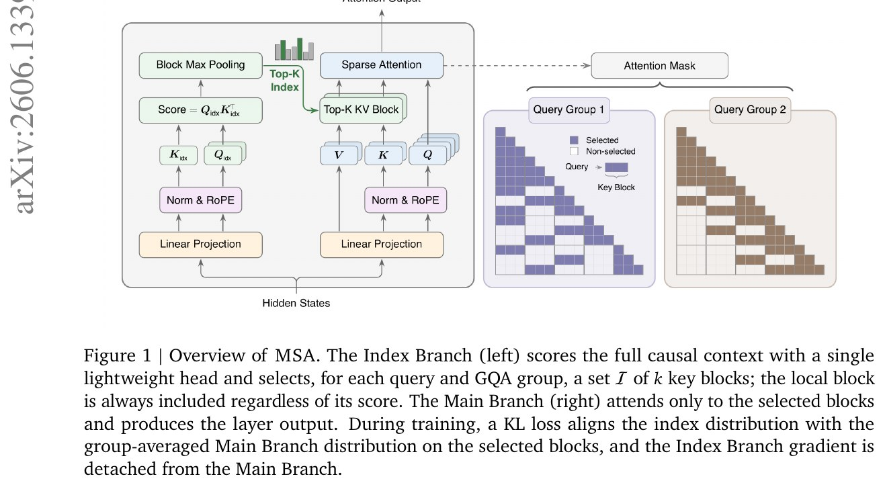
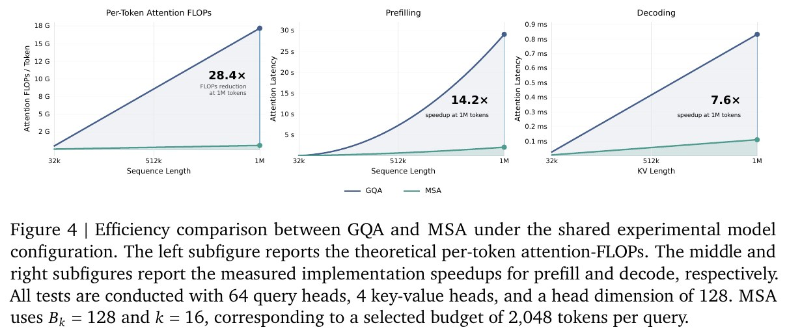

速览
MSA 不改 GQA 的 Q/K/V，只在旁边挂一个「选块器」。论文验证用的是 109B 实验模型，不是 MiniMax-M3 本体。
版本说明：主日期按 arXiv v1（2026-06-11）。本页依据的 PDF 首页水印为「arXiv:2606.13392v2 [cs.AI] 12 Jun 2026」，即 v2；本页未发现 v1/v2 差异说明。论文页脚标注「© 2026 MiniMax. All rights reserved」。
五条要点
选块器只有两个投影矩阵
index query 每个 GQA 组 1 个头，index key 全层共享 1 个头；token 级打分后对每个块取 max，再取 Top-k。最终方案没有 index value 头，推理时选块只需 QidxKidx⊤ 的块内最大值，不算 exp§3.1 · §C.3。
用 KL 教选块器，且不让 KL 碰主干
选块器去对齐 Main Branch 在选中块上的「组内平均」注意力分布；Index Branch 输入加 stop-gradient。不加时，大 KL 系数会让 LM loss 几百步内发散，小系数下短上下文基准也会慢慢退化§3.2 · §B.3。
两条路线：从头训或从 GQA 转
MSA-PT：40B token 全注意力 warmup 后一直稀疏训练。MSA-CPT：在 2.6T 的 GQA 检查点上换成 MSA，续训 400B（前 40B warmup）§5.1。PT 在数学、图像、视频、检索上多数领先；CPT 更贴近原检查点§5.3 · 表 2。
省下的 FLOPs 要靠 kernel 兑现
exp-free 的小 k TopK（k = 16 时比 torch.topk 快 4.3–5.1×）；稀疏注意力改成 KV-outer 顺序，把 8 个 query 位置 × 16 个头拼成 128×128 MMA；热点块预切分 + 两阶段 combine，不用 atomic§4 · 表 1。
质量证据止于 128K，效率数字在 1M
长上下文质量只测到 HELMET / RULER 128K（CPT 续训约 140B 长文后 Overall −0.60 / +0.12）表 3；1M 只有 FLOPs 与注意力延迟。Agent 类只报 PPL，没有任务成功率；只和自家 GQA 比，没有 NSA / DSA / MoBA 同规模对照表 2 · §6。
架构：Index Branch 选块 + Main Branch 精确注意力
MSA 是「先选再算」的两段式稀疏注意力（式 2）。作者称按奥卡姆剃刀设计：大量消融后只保留必要组件，并刻意沿用 sparse softmax 范式，以最大程度复用现有软硬件§1。

3.1 一层 MSA 里发生了什么
相对 GQA 的改动 §3.1
- 只多两个投影：
W_q^idx（输出 Hkv 个 index query 头）和W_k^idx（1 个 index key 头，全组共享）式 5。 - 选块粒度是块（Bk 个连续 token），选择单位是 GQA 组：组内 G 个 query 头共享索引，各自保留 query 投影式 3 · 式 8。
- 局部块（含当前位置 i 的块）训练和推理都强制入选，占 k 个名额中的 1 个§3.2。
- Main Branch 就是标准缩放点积注意力，只是 K/V 被 gather 到选中块式 8。
计算量 §3.3 · 式 12
FGQA(N) = 2 Hq dh N²
FMSA(N) = Hkv didx N² + 4 Hq dh N k Bk
Index Branch 仍是 N²，但系数是 Hkvdidx，远小于 Hqdh；Main Branch 随 N 线性增长。所以 N 越大差距越大§3.3。
把 §5.1 的配置和 28.4× 代入式 12 反推，didx ≈ 128推算。原文没有直接给出 didx。
3.2 和同类做法的区别
| 方法 | 底座 | 选择粒度 / 共享方式 | 选块器怎么训 |
|---|---|---|---|
| NSA | MQA / MHA | 压缩注意力 + 细粒度块选择 + 滑窗，三支并行 | 原生训练 |
| MoBA | GQA | 很大的 KV 块，块内 key 取平均打分 | 只靠 LM 梯度 |
| InfLLM-V2 | — | 无参数块选择 + 局部滑窗，可零样本稠密 ↔ 稀疏切换 | 无参数 |
| DSA | MLA（MQA 模式） | 多头 ReLU lightning indexer，token 级；所有 query 头共享一个 Top-k | 原文此处未描述 |
| MSA | GQA | 每个 GQA 组独立 Top-k + 块级：多组各取所需，KV 读取保持连续 | KL 对齐 + 输入 stop-grad + warmup |
整理自 §6 Related Works 的文字描述，不是论文里的表；作者把「组级 Top-k 共享 + 块级选择」两点同时成立视为与近邻的区别§6。
3.3 Kernel 协同设计
Index & TopK §4.1
- exp-free：softmax 保序，所以选块前直接对原始分数排序，跳过 max/exp/sum。
- Bk 与 k 一起定：大 Bk 提高注意力的算术强度，小 k 让每行候选块数 B 和 k 都低于通用 top-k kernel 的甜区。部署配置 Bk = 128，k = 16。
- 每个 warp 的 32 个 lane 各扫 1/32 行，在共享内存里维护 k 元素最小堆，堆顶缓存在寄存器里；最后做 k 轮 shuffle 合并，bank 无冲突。
KV-outer 稀疏注意力 §4.2
- Q-outer 的 FLOPs/IO ≈ G；KV-outer（按 KV 块收集选中它的 query）≈ ⅔Bk。实验配置下约为 16 对 85推算，所以选 KV-outer。
- 预切分：sink 块几乎被所有 query 选中，按 query 维把热点 tile 切成每块 ≤ ~2kBk 个 query 的 chunk，并预分配写入槽位，不用 atomic。
- 两阶段 forward：先写局部归一化的部分输出和 LSE，再由 combine kernel 合并；用 PDL 隐藏两次 launch 的间隔。
- Query 拼接：G = 16 时单个位置的 M 维只有 16，于是把 ⌈128/G⌉ = 8 个位置拼成 128×128 的 score MMA。
训练侧：Sparse KL loss §4.3
LSE 融合：Main Branch 前向时顺手把 LSEmain 写到显存；Index Branch 计算时保存每个块的 LSE，再在 Top-k 块上归约得到 LSEidx。这样 KL 的 forward 整个省掉，backward 直接读这些标量。backward 用持久化 grid + 全局原子计数器领任务，按每个 tile 的 query 数切子 tile，做动态负载均衡。
表 1：TopK kernel 延迟（μs，H800，fp32，50 次热身后取中位数）展开
| 序列长 N | 块数 B | k | torch | TileLang | Ours | vs torch | vs TileLang |
|---|---|---|---|---|---|---|---|
| 128K | 1024 | 16 | 3970 | 2864 | 779 | 5.1× | 3.7× |
| 128K | 2048 | 32 | 5378 | 3630 | 1991 | 2.7× | 1.8× |
| 512K | 4096 | 16 | 33810 | 17779 | 7880 | 4.3× | 2.3× |
| 512K | 8192 | 32 | 57659 | 26100 | 21326 | 2.7× | 1.2× |
部署配置为 Bk = 128、k = 16；k = 32 的两行对应 Bk = 64，仅作参考。三种实现选出的索引集合完全一致表 1。
数据：原文只交代了 token 预算
这是方法论文，数据只作为实验背景出现：原文只说实验模型「在文本与图像 / 视频的混合数据上原生多模态训练」§5。来源、清洗、合成、caption、配比都没有写。因此下面只列已披露的规模，不画配比图。
| 项目 | 原文内容 | 来源 |
|---|---|---|
| 已披露 | ||
| 数据类型 | 文本 + 图像 / 视频混合，原生多模态训练 | §5 |
| 总训练预算 | Full、MSA-PT、MSA-CPT 三个模型都是 3T token | §5.1 |
| MSA-PT 的 warmup | 40B token 的 indexer warmup（全注意力），之后一直稀疏训练 | §5.1 |
| MSA-CPT 的起点 | 在 2.6T token 上训练的 GQA 全注意力检查点 | §5.1 |
| MSA-CPT 续训 | 400B token，其中前 40B 为 indexer warmup | §5.1 |
| 长上下文扩展 | 在 CPT 检查点上再训约 140B token 长上下文数据 | §5.3 |
| 词表 | 200K token | §5.1 · §B.1 |
| 消融用数据 | 10B pilot 模型各次运行用「与全规模相同的预训练语料」的子集 | §B.1 |
| 原文未披露 | ||
| 来源与规模 | 文本、图像、视频各自来自哪里、各多少 token：原文未披露 | — |
| 配比 | 文本 / 图像 / 视频比例、各阶段配比是否变化：原文未披露 | — |
| 清洗与过滤 | 原文未披露 | — |
| 合成数据 | 原文未披露 | — |
| caption / 标注 | 图像、视频配什么文本、怎么生成：原文未披露 | — |
| 视觉编码方式 | 视觉编码器、视觉 token 数：原文未披露 | — |
| 预训练序列长度 | 3T 阶段的训练上下文长度、长上下文扩展的目标长度与数据构成：原文未披露（评测只做到 128K） | 表 3 |
| pilot 的 token 数 | 只说「子集」，没给量 | §B.1 |
Agent PPL 用的是什么数据？口径不明
表 2 里 TAU2、AgentCompany、HLE、SWE 四行是「下游 agent 任务上的困惑度」，不是任务成功率§5.1。原文没说明这些 PPL 是在什么轨迹或答案文本上算的、各多少条。只能当作「同一份数据上三个模型的相对比较」来看。
训练配方
只有预训练（含续训和长上下文扩展）；论文没有后训练和 RL，后者只出现在结论的展望里§7。优化器、学习率、batch、KL 系数 λ 都没给数值。
MSA-PT：从头稀疏预训练
- warmup
- 40B token 全注意力
- 之后
- 稀疏训练到 3T
- Bk / k
- 128 / 16
warmup 时两支都跑全注意力，只用 LKL 训练新加的 index 投影§3.2 · §5.1。
MSA-CPT：从 GQA 转换
- 起点
- 2.6T 的 GQA 检查点
- 续训
- 400B（含 40B warmup）
- 总计
- 3T
warmup 期间 KL 迅速下降，切到稀疏后 KL 保持低位§5.2 · 图 3。
长上下文扩展（仅 CPT）
- 数据
- 约 140B token
- 评测
- HELMET / RULER 128K
- 目标长度
- 未披露
每个 query 每组仍只看 2,048 个 KV token§5.3 · 表 3。
token 时间线（按原文数字等比绘制）§5.1
5.1 损失与三个稳定化手段
总损失：L = LLM + λ Σlayers LKL；λ 原文未给数值算法 1。
KL 的方向与对象：DKL( stopgrad(P) ‖ Pidx )，P 是组内 G 个头的 Main Branch 分布在概率层面取平均，只在选中块诱导出的 token 集合上计算，对所有位置和 GQA 组求平均式 9–10。
| 手段 | 做法 | 不做会怎样（消融） | 来源 |
|---|---|---|---|
| Gradient Detach | Index Branch 的输入用 stopgrad(X)，KL 只更新 Wqidx、Wkidx | 大 KL 系数：梯度尖峰传进主干，LM loss 几百步内发散；稳定系数下短上下文基准逐渐退化，作者归因于「主干简化注意力分布去迎合 KL」的自蒸馏效应 | §3.2 · §B.3 · 图 8–9 |
| Indexer Warmup | 前若干步两支都跑全注意力，只训 index 投影，之后切稀疏 | 训练初期 Main Branch 注意力熵在头几百步急剧下降；从第 0 步就稀疏时，选块近乎随机，把主干引向无信息 token。加 warmup 的版本短上下文和长上下文检索都更好 | §3.2 · §B.4 · 图 10–11 |
| Local Block | 含当前位置的块始终入选，占 1 个名额 | 防止漏掉 query 紧邻的上下文。附录称最终只强制这个「不完整的自身块」，不强制首块和大局部窗 | §3.2 · §C.2 |
5.2 设计取舍的消融（附录）
| 问题 | 对比 | 结论 | 最终方案 |
|---|---|---|---|
| 选块器的梯度来源 | 仅 LM（加 index value 输出） / 仅 KL / LM + KL | 仅 LM：短上下文好、检索差；仅 KL：检索好、短上下文差；两者兼用最平衡§B.2 · 图 7 | KL；value 头后来去掉 |
| Index value 头 | With-value vs No-value（续训设定） | 有 warmup 后无系统性差异，各有胜负§C.3 · 表 6 | 去掉 |
| 可学习 attention sink | GPT-OSS 式 sink logit | 没完全消除首 token sink，PPL 无一致收益§B.5 · 图 12–13 | 不用 |
| 动态选块 vs 滑窗 | 同 FLOPs 的「首块 + 局部窗」固定模式 | 滑窗在整条训练轨迹上 agent PPL 都更高§B.6 · 图 14 | 动态选块 |
| 块大小 | Bk = 32 / 64 / 128，总选中 token 数不变 | PPL 几乎不变；RULER-8K 72.5 → 73.8，RULER-32K 66.1 → 64.6§C.1 · 表 4 | 128 |
| 强制 sink + 局部窗 | No Forced vs Forced | 多数指标接近；RULER-32K 61.5 vs 65.8§C.2 · 表 5 | 只强制自身块 |
Pilot 模型配置（附录 B 的消融底座）展开
10B 级 pilot：16 层，dmodel = 2048，GQA 32 个 Q 头 / 4 个 KV 头，head dim 128，RoPE dim 64；MoE 64 个专家激活 4 个，专家内维 1536；共 10.53B 总参、1.47B 激活。优化器、学习率调度、tokenizer 与全规模相同（但全规模的具体数值原文也没给）§B.1。
注意：表 4、表 5 是「更少迭代、部分评测」的设定§C.1；表 6 标为「续训消融」，规模原文未单独说明。附录 B 的图 7–14 只有图，原文没给数值表。
评测：和自家 GQA 全注意力逐项对比
对比对象只有一个：同架构、同 3T 预算、匹配检查点的 GQA 全注意力模型（下表 Full）。全部是预训练阶段评测，没有对外模型对比§5.1。
6.1 效率（1M 上下文）
怎么读这三个数 §5.4
- 测试配置：64 Q 头、4 KV 头、head dim 128；MSA 用 Bk = 128、k = 16图 4。
- 图 4 纵轴是注意力延迟，不是端到端吞吐；decode 的横轴是 KV 长度。
- 实测加速低于 FLOPs 降幅：多了建索引、Top-k、反向索引、query gather、负载均衡等开销，访存也不如稠密规整；但加速比随长度增长§5.4。
- batch、精度（kernel 支持 bf16 / fp8）、GQA 基线用的 kernel：原文未说明。

6.2 主结果：表 2（3T token 预算）
先看差值。下图是 MSA-PT、MSA-CPT 相对 Full 的分差（本页计算）。PT 只在 6 项上低于 Full，最大的正差出现在 VisualWebBench（+12.8）和 EgoSchema（+8.0）。CPT 的负差集中在 ChartQA（−3.6）、EgoSchema（−3.8）、HumanEval（−3.1）、RULER-8K（−2.6）、GSM8K（−2.5）表 2推算。
| 基准 | Full | MSA-PT | MSA-CPT |
|---|---|---|---|
| General | |||
| MMLU | 67.0 | 67.2 | 66.8 |
| MMLU-Pro | 38.5 | 38.8 | 39.1 |
| BBH | 67.7 | 66.6 | 66.1 |
| GPQA Hard | 25.9 | 26.3 | 26.3 |
| ARC Challenge | 82.7 | 82.5 | 82.9 |
| TriviaQA | 66.0 | 65.5 | 67.7 |
| WinoGrande | 58.3 | 60.9 | 62.0 |
| Math | |||
| GSM8K | 76.2 | 77.7 | 73.7 |
| MGSM | 44.1 | 46.0 | 44.2 |
| MathVista | 43.8 | 46.8 | 44.5 |
| OlymMATH Easy P@100 | 23.0 | 26.0 | 22.0 |
| Code | |||
| HumanEval | 61.0 | 64.0 | 57.9 |
| EvalPlus | 59.4 | 61.8 | 60.0 |
| BigCodeBench | 44.8 | 44.0 | 45.7 |
| MultiPL-E MBPP P@10 | 82.1 | 81.6 | 81.1 |
| Retrieval | |||
| RULER-8K | 79.8 | 84.2 | 77.2 |
| RULER-32K | 75.0 | 77.5 | 75.7 |
| Image | |||
| AI2D | 68.3 | 70.6 | 67.3 |
| ChartQA | 75.0 | 75.4 | 71.4 |
| MMMU | 46.8 | 45.9 | 44.5 |
| OCRBench v2 | 55.0 | 55.7 | 54.3 |
| CharXiv | 37.55 | 41.55 | 37.15 |
| VisualWebBench | 55.6 | 68.4 | 59.4 |
| CVBench | 57.0 | 59.7 | 58.8 |
| Video | |||
| EgoSchema | 29.6 | 37.6 | 25.8 |
| LongVideoBench | 38.5 | 41.8 | 38.9 |
| MLVU | 44.14 | 46.94 | 43.68 |
| MMVU | 45.8 | 47.5 | 45.8 |
| VideoMME | 41.11 | 45.48 | 39.65 |
| TemporalBench | 49.4 | 53.4 | 50.6 |
| PPL ↓（下游 agent 任务困惑度，越低越好） | |||
| TAU2 | 1.155 | 1.148 | 1.150 |
| AgentCompany | 1.248 | 1.249 | 1.247 |
| HLE | 1.275 | 1.278 | 1.275 |
| SWE | 1.216 | 1.218 | 1.216 |
记号说明：P@100 / P@10 为 pass@100 / pass@10；↓ 表示越低越好；HLE、SWE 在此是 Humanity's Last Exam 与 SWE-bench 上的 PPL，不是解题率。部分行保留两位小数（CharXiv、MLVU、VideoMME），沿用原表写法表 2。
6.3 长上下文扩展：表 3（仅 MSA-CPT）
在 CPT 检查点上再训约 140B 长上下文 token 后，与 Full 对比。Δ 为原文给出表 3。
| 基准 · 子集 | Full | MSA-CPT | Δ |
|---|---|---|---|
| HELMET-128K | |||
| Overall | 46.53 | 45.93 | −0.60 |
| ICL | 70.40 | 72.80 | +2.40 |
| Rerank/RAG | 34.60 | 32.50 | −2.10 |
| RULER-128K | |||
| Overall | 72.00 | 72.12 | +0.12 |
| CWE/FWE | 46.35 | 45.00 | −1.35 |
| MK/MQ/MV | 96.63 | 98.87 | +2.24 |
| QA1/QA2 | 47.80 | 46.80 | −1.00 |
| VT | 97.80 | 96.80 | −1.00 |
Overall 是各细分子任务的平均。原文没说明 Full 基线是否也做了同样 140B 的长上下文扩展。结论里作者自己也把「缩小剩余的长上下文检索差距」列为下一步§7。
6.4 训练动态
PT vs Full：loss 曲线几乎重合 图 2
3T token 全程 LM loss 几乎无法区分，最后 50B token 的放大图中两条线仍然重叠；梯度范数处于同一区间，没有异常波动§5.2。
CPT：KL 与召回 图 3
warmup 阶段 KL 快速下降，切到稀疏后保持低位。Block recall = 选中块与「Main Branch 分数 Top-k 块」的重合比例；score recall = 选中块覆盖的 Main Branch 注意力质量占比。后者更高，说明选中块拿走了大部分注意力质量§5.2。图中两条召回线大致在 0.7–0.95 区间（读图，非原文数值）。
新在哪
两段式稀疏注意力、可学习 indexer、块稀疏 kernel 都不是本文首创。可核对的新意在下面这些组合和工程细节。
「每个 GQA 组独立 Top-k」+「块级选择」同时成立
DSA 是 token 级、所有头共享一个 Top-k；MoBA 虽在 GQA 上，但块很大、用块均值打分。MSA 让 4 个 KV 组各选 16 个 128-token 块，选块器只多 2 个投影§3.1 · §6。附录可视化显示不同组确实挑了不同的长程条纹，并没有塌缩成同一种全局模式附录 A · 图 5。
没有和 DSA / MoBA / NSA 在同底座、同预算下的质量对照。
把辅助 KL 关在 Index Branch 里，并给出失败模式
teacher 分布 detach 还不够，Index Branch 的输入 X 也要 stop-grad；否则会出现 loss 发散，以及主干「把注意力变简单来迎合 KL」导致的短上下文退化§3.2 · §B.3。
失败模式只在 pilot 上用图展示（图 8–9），没有数值表。
同一配方覆盖「从头训」和「从 GQA 检查点转」
同一套 warmup + KL 用在两条路线上，在 109B、3T 预算下给出 PT / CPT 与 Full 的逐项对照，并报告了 CPT 的选块召回曲线§5 · 表 2 · 图 3。
CPT 只做了一次（2.6T 起点）；不同转换起点、不同续训长度的影响没测。
KV-outer + query 拼接 + 预调度切块的稀疏 prefill kernel
算术强度从 ≈ G 提到 ≈ ⅔Bk；热门块（如 sink）切成多 CTA，预分配槽位免 atomic；两阶段 combine 用 PDL 衔接§4.2。训练侧把 KL 所需的 LSE 融进主前向§4.3。
只有端到端的注意力延迟（图 4），没有 kernel 级的分项耗时或 tensor core 利用率。
小 k 专用的 exp-free TopK
寄存器缓存堆顶 + 每 lane 固定 bank 的共享内存最小堆 + k 轮 shuffle 合并；在部署配置 k = 16 下比 torch.topk 快 5.1×（128K）/ 4.3×（512K）§4.1 · 表 1。
对图像编辑数据 / 评测 / caption 的启示
MSA 是 LLM 注意力论文，不涉及图像数据构建或 caption 流水线。可借鉴的是它的方法论：用便宜的选择器去逼近昂贵的「老师」，并用召回去量化；把辅助目标关在自己的模块里；以及同预算、匹配检查点的对照实验。每条先写论文怎么做，再给一条迁移建议（不是论文内容）。
D1便宜的选择器要报两种召回
论文：用 block recall（选中块与 Main Branch Top-k 的重合率）和 score recall（选中块覆盖的注意力质量）衡量 indexer，两者都随训练跟踪§5.2 · 图 3。
迁移建议，不是论文内容：用小 VLM 或规则给编辑对做初筛、大 VLM 当判官时，同时报「集合召回」（小模型保留的样本里有多少落在大模型 Top-k 中）和「分数加权召回」（被保留样本占大模型总分的比例）。后者能看出漏掉的是不是高分样本。
D2选择器要先在「不过滤」状态下热身
论文：训练初期注意力分布变化很快，直接稀疏选块近乎随机，会把主干带偏；先跑全注意力只训 indexer，再切到稀疏§B.4 · 图 10–11。
迁移建议，不是论文内容：新接一个数据源或新上一版质量打分器时，先让它只打分不剔除跑一轮（shadow mode），对照人工抽检校准阈值，再真正开始过滤。不要让刚上线的打分器直接决定哪些数据进训练集。
D3过滤效果要和同预算的固定规则比
论文：拿同 FLOPs、同 token 预算的「首块 + 滑窗」固定模式作为对照，证明动态选块确实有用，而不只是因为「看得少」§B.6 · 图 14。
迁移建议，不是论文内容：报告「模型筛过的 N 万对」的收益时，同时训一份「随机抽 N 万对」和「按简单规则（分辨率、长宽比、OCR 量）筛 N 万对」的对照；只和全量数据比，分不清收益来自筛选还是来自数据变少。
C1辅助损失别反传进主干
论文：KL 若能传到主干，主干会「把注意力变简单」来降低 KL，短上下文能力因此退化；对 Index Branch 输入做 stop-grad 后问题消失§B.3。
迁移建议，不是论文内容：编辑模型上挂「caption-图像一致性」或「编辑区域预测」之类的辅助头时，默认 detach 主干特征，先确认辅助头本身学得好。若要让辅助信号回流主干，单独做一组对照，看主任务指标会不会被「迎合辅助目标」拖低。
C2硬编码的先验要定期拆掉重测
论文：早期强制选首块和大局部窗作为稳定器；后来发现去掉后模型自己会学出 sink 和局部模式，最终只保留强制自身块；可学习 sink 也没带来一致收益§C.2 · §B.5。
迁移建议，不是论文内容：结构化 caption 里那些「必填」字段（如固定的保持清单、固定的风格槽）往往是早期为了稳定加的。每个大版本做一次去掉字段的对照，看模型和判官是否已经能从自由文本里拿到同样的信息，避免模板越来越重。
E1同预算、匹配检查点、同一套评测
论文：Full、MSA-PT、MSA-CPT 都在 3T 总预算下取匹配检查点，用同一套评测，覆盖文本、代码、图像、视频、长上下文和 agent PPL§5.1。
迁移建议，不是论文内容：比较两版编辑数据时，固定训练步数和样本数，取同一步的检查点，用同一份评测集。另外保留一组「与编辑无关」的回归项（文生图质量、人像保真、文字渲染），确认数据改动没有悄悄伤到别的能力。
E2超大单项涨幅先怀疑噪声
论文：同一套注意力改动下，PT 在 VisualWebBench 上 +12.8、EgoSchema 上 +8.0，而 MMMU 是 −0.9；作者只说差距「依基准而异」，没有报方差或多次运行表 2 · §5.3。
迁移建议，不是论文内容：编辑评测按类别报分差时，先用同一模型不同 seed 重跑两次，测出每个类别的「自身波动」。超过这个波动的变化才算数；单项暴涨时先检查样本数、判官稳定性，再归因到数据改动。
E3loss 类指标当早期信号，但要先知道噪声底
论文：用下游 agent 任务上的 PPL 做廉价代理指标，三个模型的差异在千分位（如 TAU2 1.155 / 1.148 / 1.150）表 2。
迁移建议，不是论文内容：按编辑类型（增、删、换、风格、文字）分桶留 held-out 集，训练过程中持续看各桶的验证 loss，比跑生成 + 判官便宜得多。但千分位级别的差异要先用重复训练确认不是噪声，并定期和真实生成评测对一次结论。
局限与存疑
- 109B 实验模型 ≠ MiniMax-M3：论文只在摘要里说 M3「由 MSA 驱动」并给出 HF 链接；M3 的参数量、MSA 配置（Bk、k）、训练数据与流程都不在论文里。本页所有质量和效率数字都只适用于 109B 实验模型摘要 · §5.1。
- 1M 只有效率，没有质量：质量评测最长到 128K（表 3）；28.4× / 14.2× / 7.6× 都在 1M 上测。1M 下检索与推理质量是否保持，原文没给数据表 3 · 图 4。
- 数据完全未披露：文本 / 图像 / 视频的来源、配比、清洗、caption 都没有；3T 阶段的训练长度与 140B 长上下文扩展的目标长度也没有§5 · §5.3。
- 没有和同类方法同规模对比：只与自家 GQA 比；NSA、DSA、MoBA、InfLLM-V2 只在相关工作里定性对比§6。
- 效率口径不完整：图 4 是注意力延迟，不是端到端吞吐；batch、精度、GQA 基线所用 kernel 没说明。didx 未给，本页按式 12 反推约 128推算。
- Agent 只有 PPL：TAU2、AgentCompany、HLE、SWE 四行都是困惑度，差异在千分位；没有任务成功率，也没说明 PPL 在什么文本上计算表 2。
- 无方差、单次运行：表 2 没有误差棒。PT 在 VisualWebBench +12.8、EgoSchema +8.0 这类大幅提升，单靠「改注意力」难以解释，原文没讨论表 2。
- 消融的文字结论比数字乐观：表 5 中去掉强制 sink / 局部窗后 RULER-32K 从 65.8 降到 61.5，正文称「comparable」；表 4 中块从 32 增到 128 时 RULER-32K 从 66.1 降到 64.6，正文称「无明显退化」§C.1 · §C.2。
- 最终配方在从头训设定下没有直接消融：§B.2 的 pilot 结果显示「仅 KL」会伤短上下文；去掉 value 头的依据是表 6（标为续训消融）加上 warmup。MSA-PT 用的「无 value 头 + warmup」组合没有单独的从头训对照§B.2 · §C.3。
- Full 基线是否做了长上下文扩展不明：表 3 只说 MSA-CPT 做了约 140B 扩展，Full 列的训练状态没交代§5.3。
- 没有后训练 / RL：全是预训练阶段评测；RL 与 agent 部署只出现在展望里§7。开源部分只说明了推理 kernel，训练 kernel 和许可证都未提及。
图表索引
| 编号 | 内容 | 本页位置 |
|---|---|---|
| 图 1 | MSA 总览：Index Branch / Main Branch / 分组选块掩码（figures/fig1.jpg，p.1） | §03 |
| 图 2 | Full vs MSA-PT 的 LM loss 与梯度范数（未裁图，仅文字引用） | §06.4 |
| 图 3 | MSA-CPT 的 KL loss 与选块召回（未裁图，仅文字引用） | §06.4 |
| 图 4 | GQA vs MSA：FLOPs、prefill、decode（figures/fig4.jpg，p.12） | §06.1 |
| 图 5 / 6 | Index 选块概率可视化；各头首 token 注意力（sink）（未裁图） | §07 |
| 图 7–14 | 附录消融：梯度来源、KL detach、warmup、可学习 sink、滑窗对照（未裁图） | §05.2 |
| 算法 1 | 单层 MSA 训练前向与 KL loss | §03.1 · §05.1 |
| 表 1 | TopK kernel 延迟 | §03.3（折叠） |
| 表 2 | Full / MSA-PT / MSA-CPT 主结果 | §06.2 |
| 表 3 | MSA-CPT 长上下文扩展：HELMET / RULER 128K | §06.3 |
| 表 4–6 | 块大小；强制 sink / 局部窗；Index value 头 | §05.2 |
| 示意图 | MSA 单层示意（本页据 §3 绘制）；效率柱状图（据图 4 标注）；表 2 分差图（本页计算）；token 时间线（据 §5.1） | §03 · §06 · §05 |